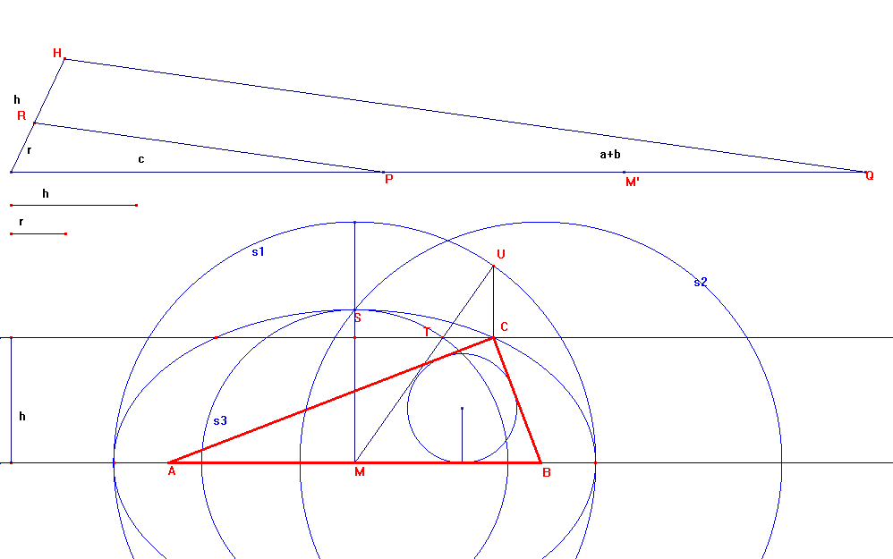

Problema 100
Dado un lado l, la altura correspondiente h y el radio de la circunferencia inscrita, r, construir el triángulo.
Rey Pastor, J. (1905): Revista Trimestral de Matemáticas. Zaragoza.(Tomo
V. p. 239)
Solución del profesor Ignacio Larrosa Cañestro del IES Rafael Dieste. A Coruña (España) (16 de junio de 2003)
Utilizaré la letra c para el lado dado. Si los otros son a y b, se tiene que la superficie S del triángulo es
S = c*h/2 = r*(a + b + c)/2
De aquí que a + b = c*h/r - c

Por tanto, el´vértice opuesto al lado c se encuentra en la intersección de una paralela a c a una distancia h, con la elipse que tiene por focos los extremos de c y por eje principal (a + b). De aquí se decuce fácilmente la construcción. Llamando p = a + b + c al perímetro del triángulo, tenemos
c/r = p/h
Colocamos sobre un mismo lado de un ángulo con extremo en su vértice O, segmentos de longitud r y h, cuyo otro extremo serán los puntos R y H, y en el otro lado un segmento de longitud c, con extremo en P. Trazando por P una paralela al segmento RH, determinamos en el otro lado el punto Q, de manera que OQ es p y PQ = a + b. Sea M' el punto medio del segmento PQ.
Con centro en el punto medio M del lado c, trazamos la circunferencia
s1 de radio M'P = (a+b)/2 y con centro en B, extremo de c, otra s2 de igual
radio. El punto S en que s2 corta a la perpendicular por M a c, es un vértice
secundario de la elipse. Trazamos la circunferencia s3 de centro M y radio MS.
Hallamos el punto T en que la paralela a c a una distancia h corta a s2. Trazamos el rayo MT, que corta a s1 en U. El punto de intersección de la paralela a c por T con la perpendicular por U, es el vértice C del triángulo buscado.
Para que exista el triángulo, debe ser
h < rq((a+b)^2/4 - c^2/4) = c*rq((h/r - 1)^2 - 1)/2
h < (c/r)*rq((h - r)^2 - r^2)/2 = (c/(2r))*rq(h^2 - 2hr) ==>
c > 2*r*h/rq(h(h - 2r))